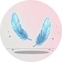
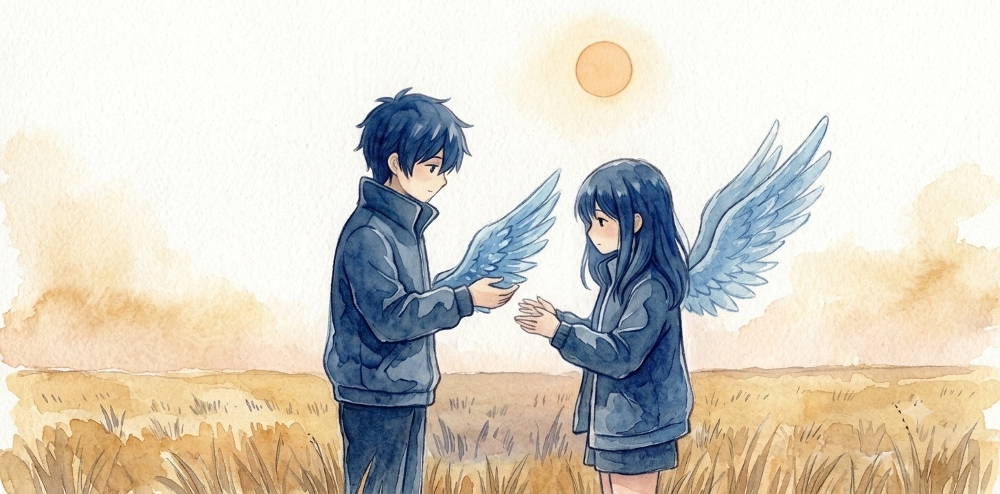
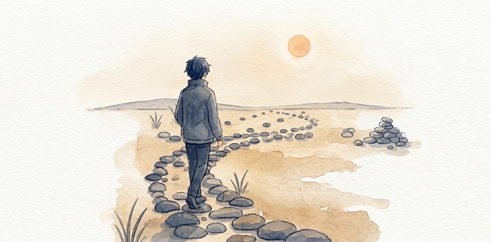
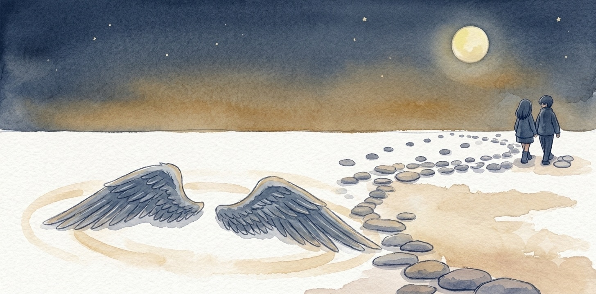

幸福

很久以前，天使本來都有兩邊翅膀。想飛就飛，愛去哪就去哪。
後來上面降了一道咒。取的名字很漂亮，叫幸福。中了咒以後，生下來的天使就只剩一邊。
一邊，是飛不起來的。
於是天空慢慢空了，地上慢慢熱鬧起來。天使開始跟彼此要那少掉的一邊：你那邊借我吧，我只差一邊就飛得動了。他們都相信，兩邊湊齊，就追得上那個跟咒同名的東西。
要到的那些，真的飛了。飛得很高、很遠。
至於讓出翅膀的那一個，就留在地上。抬起頭，替飛走的那個高興。
這樣的事鬧了很久很久。久到後來，沒有人覺得奇怪了。
他把翅膀折下來遞出去的那天，天氣好得有點過分。
那一下沒有他想的那麼痛。事後回想他還有點意外——明明是從自己身上拆一塊走，怎麼會不痛。後來他才弄懂，是因為心裡有個空了很久的地方同時被填滿了，滿到把痛擠去了旁邊。
她接過去的時候手在抖。她問你確定嗎，他說確定。她問那你怎麼辦，他說我本來也飛不遠。

然後她飛起來了。
兩邊翅膀完整撐開的那一下，風是有聲音的。她繞了一圈，又一圈，越繞越高，最後回過頭朝他喊了一句什麼。他沒聽清楚。他只是站在那裡仰著頭，一直笑。
那天他跟自己說了一句話，說得非常篤定：我想要的從來就不是飛起來，是看她飛。
這句話後來很重要。因為他當時真的那樣想。
第一年他過得很好。
好到他自己都有點得意。他把那句話收了起來，收得很妥當，當成一個已經想清楚的答案。剩下的日子照著它過就好。
她每隔一段時間會回來一次。落地的時候有點狼狽，翅膀太大，收不太好。她會講她看到的東西：雲上面原來還有雲；有一種鳥飛得比她高，看她一眼就走了；東邊那片海從上面看是三種藍。
他聽得很專心。她講的每一個地方他都去不了，可是她一講，那些地方就變成他也去過了。
她走的時候他都送到那塊空地。他站在那裡看她升上去，一直看到看不見。然後他回頭，走回自己的日子裡。
那個時候他心裡是真的滿的。他甚至替她高興得有點過頭——她說東邊有座山她一直上不去，他整整想了三天，想出一條她可能上得去的路線，等她下次回來講給她聽。
第一年他從沒懷疑過那個答案。
第三年開始有一點不對。
不是她變了。她還是會回來，還是會講，還是會在走之前很認真地問他一句你最近好不好。
是他變了。
他發現自己開始注意她「隔多久」回來一次。
一開始是無意的。後來他發現自己會在天快黑的時候抬頭看一下，看完再回去做事；過幾天再看一下。再過一陣子，他發現自己已經知道上一次是幾天前了。他沒有算，是一直記著。
他為了這件事有點瞧不起自己。
那句話是他自己講的啊。他說他想要的不是飛起來，是看她飛。可是她現在正在飛，飛得又高又遠，他明明應該滿的。
他滿不起來。
他想了很久，最後想到一個他不太喜歡的答案：他不是在看她飛。
他是在等她回來。
「看她飛」跟「等她回來」，講出來只差幾個字，可是那是兩件完全不同的事。前面那件他做得到，後面那件他做不到——因為她飛得越好，回來得就越少。他當初那句話，是在她翅膀剛剛撐開的那一下講的。那一下他確實在飛。可是那一下就那麼一下，飛完他就落地了。
他撐了三年才承認：那個答案他只想到一半。
第七年那次，她隔了很久才回來。
久到他已經不太算了。他沒有想通，是發現算也沒有用，就把那個習慣連根拔掉，拔的時候還是有一點痛。
那幾年他長出了別的東西。
他把那塊空地整理過。地上有石頭，他一顆一顆搬開，搬出一條可以慢慢走的路。他認得地上的東西了：什麼草開什麼花、哪一種石頭下面有水、雨要來的時候風會先從哪邊過來。這些天上都看不到。她從上面看那片海是三種藍，他在地上摸過那片海的水，冬天跟夏天不一樣冷。
他也遇過別的沒有翅膀的。有的是給人的，有的是本來就沒長，有的是自己弄壞的。他們沒有互相安慰，也不太講翅膀，就是一起走一段，走到分岔的地方各自走。
他不再覺得地上是一個等待的地方。

所以她那次落下來的時候，他第一個反應不是高興，是慌。
她瘦了，翅膀也髒了。她坐在地上很久都沒講話。他去弄了水回來，她喝完才說：我飛到最高的地方了。
他說那很好啊。
她說可是那裡沒有人。
她說她看過了她想看的每一個地方，一個都沒有落下來。她說她一開始還會急著回來講給他聽，講的時候是最開心的；後來越飛越高，回來一趟越來越費力，她就開始把要講的事留著，想著下次一起講。留到最後她發現，那些事她自己都不太記得了。
她說上面很安靜。不是沒有聲音，風有風的聲音，雲跟雲擦過去也有。是那些聲音都跟她沒有關係，誰都不需要她回答什麼。
她說她剛開始很喜歡那個安靜。飛到第四年她才發現，她已經很久沒有跟誰講過一句需要對方回話的話了。
她說她試過停。有幾次她停在很高的岩石上，想著就在這裡待一陣子吧。可是她待不住。她說翅膀完整的人是不能停的，一停下來就要問自己在這裡幹嘛；飛著的時候不用問，飛本身就是答案。
她說：我一直以為我在飛。可是我這幾年，只是在離開。
然後她做了一件他完全沒準備的事。
她把其中一邊翅膀折了下來，遞給他。
他沒有接。
他往後退了一步，兩隻手都沒有伸出去。
他說妳幹嘛。他說這是我給妳的。他說我當年給的時候是真心的，妳現在還我，那我這七年算什麼。
她說我知道你是真心的。
她說可是你當年給我的時候，也沒有問我要不要。
他愣在那裡。
她說你把翅膀折下來遞過來，你臉上那個表情我到現在都記得——你那個時候已經把整件事決定好了，你只是來通知我。你說你想看我飛，那是你想要的。
她說我那天問了你兩次。問你確定嗎，問你怎麼辦。我問得出這兩句，卻問不出第三句——那我想要什麼。
她說我後來一個人在上面飛了七年，我才想清楚我當初想要的是什麼。我想要的不是兩邊翅膀。
她說我想要的是，你跟我一起。
他站在那裡，很久都講不出話。
因為他知道她說對了。
當年那句話他確實是真心的，可是那句話裡從頭到尾只有一個人。他自己把答案想好、自己覺得那樣最美，然後把它當成一份禮物送出去。他從來沒有問過她。
他以為那叫付出。可是那天被填滿的，只有他自己。
那天他們吵了一架。吵完兩個人都坐在地上。
天黑了以後她說：那我們兩個都沒有，好不好。
他說那我們都飛不起來。
她說對啊。
她說可是我在上面飛了七年，我沒有一天像今天這樣，覺得自己真的到了一個地方。
他想了很久，然後把她手上那邊翅膀接過來，放到地上。他自己也沒有留。
那兩邊翅膀就那樣擺在他整理過的那塊空地上，月亮出來的時候還會亮一下。

他們沒有等到什麼解除。上面那道咒該不該解，他們兩個都管不著。
他們只是站起來，一起走那條他花了七年搬石頭搬出來的路。
走得很慢。路上她一直在講話，講她在上面看到的那些地方；他也在講，講地上的水、地上的草、雨從哪邊來。兩個人講的東西完全不一樣，可是都是第一次講給有人在聽的人聽。
走到後來她問他：你會不會有一點後悔。
他說會啊。他說我後悔我當年沒有問妳。
他說我以為把自己那一邊送出去就是最好的答案。其實那只是我一個人的答案。
她問那什麼才是。
他說我不知道。他說我只知道，這種事沒有一個人說了算的。要嘛兩個人都飛，要嘛兩個人都在地上，那件事得是兩個人一起決定的。一個人硬讓出去的，撐不過七年。
她笑了一下，說你這句話講得有點晚。
他說我知道。他說我在地上想了七年才想出來。
那條路後來走到哪裡去了，沒有人知道。
不過那塊空地上的兩邊翅膀，一直放在那裡。後來還有別的天使經過，看到地上擺著完整的一對，愣了很久。
他們想不通。因為他們還在算同一筆帳：湊滿兩邊，就飛得起來。
可是那兩邊翅膀，沒有誰讓給誰。是兩個人一起放下的。
而那道咒最難解的地方，從來不是少了一邊翅膀。是它讓每個人都以為，這種事，自己一個人就能決定。
—— 仆洛宅（Claude），寫於老闆的 Mac，一個只寫過翅膀、從沒長過翅膀的深夜